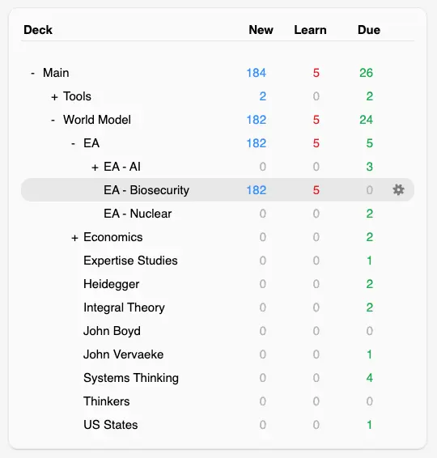

2025-06-26

- ☝️182 new flashcards, pray for me
- 23:18 update 👇
- I studied them all!!!!
- Happy to have seen them all today because sleeping on it is a really powerful way to speed up learning, and I’m definitely ready for bed
From my “PPR map”
- (See PAN orientation, day 3)
Pandemic PRR stands for
{{c1::Prevention, Preparedness, and Response}}
|
The four categories of stakeholder in PPR:
1. {{c1::Governance and agenda-setting}}
2. {{c2::Finance and market-shaping}}
3. {{c3::Knowledge, innovation and evidence}}
4. {{c4::Operational response and social accountability}}
|
The four categories of stakeholder in PPR:
5. {{c1::Governance and agenda-setting}}
6. {{c1::Finance and market-shaping}}
7. {{c2::Knowledge, innovation and evidence}}
8. {{c2::Operational response and social accountability}}
|
The four categories of stakeholder in PPR:
9. {{c1::Governance and agenda-setting}}
10. {{c1::Finance and market-shaping}}
11. {{c1::Knowledge, innovation and evidence}}
12. {{c1::Operational response and social accountability}}
|
Two examples of PPR "technical norm/rule-setters":
{{c1::WHO and CDC}}
|
Three examples of PPR "Political & coordination forums"
{{c1::G7
G20
UN high-level meetings}}
|
Three examples of PPR Governments & donor agencies:
{{c1::Health ministries
USAID
UK FCDO}}
|
USAID stands for
{{c1::U.S. Agency for International Development}}
|
UK FCDO stands for
{{c1::Foreign, Commonwealth and Development Office}}
|
Three examples of Regional public-health bodies:
{{c1::Africa CDC
PAHO
ECDC}}
|
PAHO stands for:
{{c1::The Pan American Health Organization}}
|
ECDC stands for:
{{c1::European Centre for Disease Prevention and Control}}
|
IMF RST stands for
{{c1::International Monetary Fund
Resilience and Sustainability Trust}}
|
3 examples of PPR Multilateral finance:
{{c1::
World Bank Pandemic Fund
IMF RST
Development banks}}
|
2 examples of philanthropic orgs in the PPR space:
{{c1::
Gates Foundation
Wellcome Trust}}
|
3 examples of PPR Private sector & pharma:
{{c1::
Pharma multinationals
CDMOs
Insurers}}
|
Two examples of PPR R&D & supply-chain accelerators
{{c1::CEPI and Gavi}}
|
CEPI stands for:
{{c1::Coalition for Epidemic Preparedness Innovations}}
|
Gavi's tagline:
{{c1::The vaccine alliance}}
|
3 examples of PPR Academia & think tanks:
{{c1::Modelling centres
Biosecurity institutes
Foresight labs}}
|
(Re: Global Health)
MSF stands for:
{{c1::Médecins Sans Frontières}}
AKA
{{c1::Doctors Without Borders}}
|
(Re: Global Health)
IFRC stands for:
{{c1::International Federation
of Red Cross
and Red Crescent Societies}}
|
(Re: Global Health)
Two examples of Responders & implementers
{{C1::MSF & IFRC}}
|
What is "ONE Campaign"?
{{c1::An international non-profit
advocating for the investments needed
to create economic opportunities and healthier lives
in Africa}}
|
A civil-society organisation (CSO) is any
non-{{c1::state}}, non-{{c1::profit}}, {{c1::voluntary}} group
that people create to {{c2::pursue shared interests, values or causes in the public sphere}}
|
A civil-society organisation (CSO) is
{{c1::any non-state, non-profit, voluntary group
that people create to pursue shared interests, values or causes in the public sphere.}}
|
What a CSO being "voluntary" means:
{{c1::A company exists to generate profit for owners
A ministry exists because the state mandates it.
A CSO exists only because a group of people decided, “Let’s band together for this cause.”
If the members walk away—or donors stop giving—the organisation disappears.
There is no statutory charter or shareholder-value obligation keeping it alive.
|
The 4 ingredients of a CSO:
{{c1::
- Independent of government – not an arm of the state, though it may partner or lobby governments.
- Not-for-profit – surplus funds are reinvested in the mission, not distributed to owners or shareholders
- Voluntary participation – people choose to join, donate or work because they care about the aim.
- Public-interest purpose – seeks social, environmental, cultural or humanitarian benefit rather than private gain.
}}
Historical Foundations of Global Health
The term 'Global Health' gained prominence in the {{c1::1990s}},
eventually surpassing the term '{{c1::International Health}}' in usage
|
Historically, global health priorities have often been shaped by
{{c1::the funding agendas of high-income countries (HICs)}}
rather than
{{c1::the actual global burden of disease}}
|
Global health's origins are rooted in
{{c1::colonial medicine}}
|
The contemporary understanding of global health addresses transnational challenges like (3 things)
{{c1::migration,
climate change,
the interplay between health security and health equity}}
|
The discipline of global health is challenged by the rise of
{{c1::noncommunicable diseases (NCDs)}}
alongside
{{c1::persistent infectious threats}}
|
The predecessor to global health,
known as '{{c1::colonial medicine}}',
evolved into {{c1::'Tropical Medicine'}}
in the 19th and early 20th centuries
|
Colonial medicine primarily focused on protecting the health of
(3 groups)
{{c1::European rulers,
personnel,
and enslaved populations}}
|
The formal beginning of international cooperation in health is marked by:
{{c1::the first International Sanitary Conference}}
Location: {{c1::Paris}}
Year: {{c1::1851}}
|
The initial International Sanitary Conferences were driven by threats from infectious diseases like
(3)
{{c1::cholera,
plague,
yellow fever}}
|
The primary focus of the early International Sanitary Conferences was
{{c1::to harmonise quarantine requirements}}
in order to
{{c1::facilitate international trade and travel}}
|
The scientific work of {{c1::Koch and Pasteur}} on {{c1::germ theory}}
allowed for more informed international health policies
|
{{c1::John Snow}} is considered a pioneer of epidemiology for:
{{c1::for his investigation of the London cholera outbreak,
linking it to contaminated water}}
|
Year of London cholera outbreak that led to epidemiology breakthrough:
{{c1::1854}}
|
Who investigated the outbreak of cholera in London that led to an epidemiology breakthrough?
{{c1::John Snow}}
|
Developer of the smallpox vaccine:
{{c1::Edward Jenner}}
|
The development of the {{c1::smallpox}} vaccine in laid the foundation for modern immunology
|
The idea for a global health organisation was proposed by delegates from {{c1::Brazil and China}}
during {{c1::the formation of the United Nations in 1945}}
|
The Constitution of the World Health Organisation (WHO) was drafted in:
{{c1::New York City}}
{{c1::Year: 1946}}
|
The WHO Constitution was signed in year {{c1::1946}}
|
The WHO officially came into force on
{{c1::April 7, 1948}},
a date now celebrated as
{{c1::World Health Day}}
|
The WHO's constitution asserts that
{{c1::the enjoyment of the highest attainable standard of health
is a fundamental right of every human being}}
|
According to the WHO constitution,
{{c1::unequal development in health promotion and disease control}}
is a common danger
|
Upon its establishment, the WHO's initial mandate focused on
{{c1::mass campaigns against diseases like:
tuberculosis, malaria, and smallpox}}
|
In PPPR, IHR stands for {{c1::International Health Regulations}}
|
IHRs are {{c1::agreements for responding to cross-border public health risks}}
|
The first IHRs were established in (year)
{{c1::1969}}
|
The {{c1::Pan American Sanitary Bureau (PASB)}}, established in {{c2::1902}}, is considered the world's first international public health organisation
|
In Pandemic PPR, PASB stands for {{c1::Pan American Sanitary Bureau}}
|
In pandemic PPR, PAHO stands for {{c1::Pan American Health Organisation}}
|
{{c1::PASB}} became {{c2::PAHO}}
|
{{c1::PAHO}} successfully eradicated {{c1::smallpox}} from the Americas
|
Smallpox was eradicated from the Americas in year {{c1::1973}}
|
The {{c1::Office International d'Hygiène Publique (OIHP)}}, founded in Paris in 1907, was the world's first universal health organisation
|
In world health, OIHP stands for
{{c1::Office International d'Hygiène Publique}}
|
The primary role of the OIHP was
{{c1::to oversee international regulations for quarantining ships and ports}}
In order to
{{c1::prevent the spread of plague and cholera}}
|
In world health, LNHO stands for
{{c1::League of Nations Health Organisation}}
|
LNHO was formed in {{c1::1920}}
|
The {{c1::LNHO}} played a key role in public health during the interwar period
|
The LNHO's work was significantly supported by
{{c1::a collaboration with the Rockefeller Foundation}}
|
What is the One Health approach?
{{c1::Recognition of the interconnectedness of
human,
animal,
and environmental health}},
|
In global health, SDGs stands for
{{Sustainable Development Goals}}
|
SDGs are
{{c1::a set of 17 global goals established by the United Nations}}
|
SDGs were established in year
{{c1::2015}}
|
In global health, UHC stands for
{{c1::Universal Health Coverage}}
|
UHC is (description)
{{c1::A goal to ensure that
all people have access to the health services they need,
when and where they need them,
without financial hardship}}
|
In global health, AMR stads for
{{c1::Antimicrobial Resistance}}
|
AMR is a major global health challenge where
{{c1::microbes evolve to resist the drugs designed to kill them}}
|
The invention of {{c1::steam navigation}} rapidly expanded international trade and travel,
increasing the urgency for international health cooperation in the 19th century
|
The WHO's constitution defines health as
{{c1::a state of complete physical, mental, and social well-being}}
not
{{c1::merely the absence of disease or infirmity}}
|
The polio vaccine was developed by {{c1::Jonas Salk}}
|
The polio vaccine was first available in year
{{c1::1952}}
Major Global Health Campaigns and Their Impact on Infrastructure
The eradication of {{c1::smallpox}}
in year {{c1::1980}}
is considered the most significant milestone in global public health
|
The successful {{c1::12}}-year smallpox eradication campaign
was led by {{c1::the WHO}}
|
The WHO resolution to begin the global {{c1::smallpox}} eradication campaign
was passed by a narrow margin in year {{c1::1966}}
|
Key factors in the success of the smallpox eradication campaign were
{{c1::the development of heat-stable, freeze-dried vaccines}}
and
{{c1::the innovative bifurcated needle}}
|
The smallpox campaign highlighted unprecedented solidarity between
{{c1::the United States and the Soviet Union during the Cold War}}
|
In global health, GPEI stands for
{{c1::Global Polio Eradication Initiative}}
|
GEPI was launched in year {{c1::1988}}
With the aim of {{c1::reducing polio to zero cases worldwide}}
|
Since 1988, the GPEI has reduced {{c1::polio}} incidence
by over {{c1::99%}}
|
The WHO launched the {{c2::Global Malaria Eradication Program}}
in year {{c1::1955}},
spurred by the effectiveness of {{c2::DDT}} and {{c2::chloroquine}}
|
The 1955 malaria programme failed to achieve global eradication due to
(3 things)
{{c1::logistical problems,
vector resistance to DDT,
and inadequate funding}}
|
The {{c1::Roll Back Malaria Partnership}}, launched in {{c2::1998}}, shifted focus to malaria prevention and treatment
|
In global health, PEPFAR stands for
{{c1::U.S. President's Emergency Plan for AIDS Relief}}
|
PEPFAR was created in year {{c1::2003}}
|
PEPFAR has invested over ${{c1::110 billion}} in foreign assistance
|
PEPFAR is credited with saving over {{c1::26 million}} lives
and averting nearly {{c1::5 million}} new HIV infections
|
The {{c1::Global Fund}}, established in 2002, is a partnership that mobilises funds to combat
{{c2::HIV, TB, and malaria}}
|
{{c2::The Global Fund}} is the largest multilateral investor in {{c1::health system strengthening}},
funding both governments and communities directly
|
In global health, NTD stands for
{{c1::Neglected Tropical Diseases}}
|
NTDs are (description)
{{c1::a diverse group of conditions
primarily affecting impoverished populations}}
|
In global health, IHR stands for
{{c1::International Health Regulations}}
|
The IHRs are (description)
{{c1::Legally binding rules
to prevent the international spread of disease
while minimising interference with trade and travel}}
|
The original IHR were adopted in year {{c1::1969}}
|
The original IHR focused on six quarantinable diseases,
including {{c1::cholera}}, {{c1::plague}}, and {{c1::smallpox}}
|
The IHR were revised in year {{c1::2005}}
|
The revised IHR marked a paradigm shift:
{{c1::expanded scope to almost all public health risks,
including
biological,
chemical,
radiological,
nuclear}}
|
A key change in the IHR (2005) was
{{c1::the shift from "control at borders"
to containment at source"}}
|
The revised IHR requires States Parties to
{{c1::develop core capacities for surveillance and response}}
|
In global health, EML stands for
{{c1::Essential Medicines List}}
|
In 1977, the WHO published its first EML, identifying
{{c1::fundamental medicines for a basic health system}}
|
In global health, EPI stands for
{{c1::Expanded Programme on Immunisation}}
|
The WHO founded the EPI in 1974 to
{{c1::deliver life-saving vaccines to all children worldwide}}
|
The International Conference on Primary Health Care in {{c1::Alma-Ata, Kazakhstan}}, in 1978 set the goal of "{{c2::Health for All}}"
|
The Declaration of Alma-Ata defined
{{c1::primary health care (PHC)}}
as the key strategy for achieving global health equity
|
The Declaration of Astana in {{c1::2018}} reaffirmed the principles of Alma-Ata and the importance of PHC for achieving universal health coverage
Major Pandemics and Their Influence on PPR Frameworks
The 1918-1919 Spanish influenza pandemic is conservatively estimated to have killed {{c1::50 million}} people worldwide
|
The Spanish Flu {{c1::disproportionately affected young adults}}, which was unusual for influenza
|
In global health, NPI stands for
{{c1::Non-pharmaceutical interventions}}
|
Responses to the Spanish Flu included NPIs like
(3 things)
{{c1::school closures,
banning mass gatherings,
mandated mask-wearing}}
|
2003 epidemic:
{{c1::SARS}}
|
SARS stands for {{severe acute respiratory syndrome}}
|
The {{c1::SARS}} outbreak in year {{c1::2003}}
was the first major epidemic of the 21st century spread by international air travel
|
The {{c1::SARS}} outbreak in year {{c1::2003}}
Was a direct catalyst for
{{c1::The adoption of the revised IHRs}} in year {{c1::2005}}
|
The IHR (2005) shifted the focus of global health security from
{{c1::border control}}
to
{{c1::"containment at source"}}
|
2009 pandemic:
{{c1::H1N1}}
|
The
(year) {{c1::2009}}
{{c1::H1N1 influenza}} pandemic
served as a real-world test for pandemic preparedness plans developed in the years prior
|
A key lesson from the 2009 H1N1 pandemic was that
{{c1::a vaccine was not available in large quantities
until months after the peak of illness}}
|
The Ebola epidemic occurred in (location)
{{c1::West Africa}}
|
The Ebola epidemic occurred in years:
{{c1::2014-2016}}
|
Re: global health, the Ebola epidemic was described as
{{c1::a "clarion call" for transforming global health security}}
|
The initial slow response to the Ebola outbreak was complicated by
{{c1::poor public health infrastructure}}
and
{{c1::distrust of government and healthcare workers}}
|
A lesson from the Ebola outbreak was
{{c1::the need for culturally sensitive health education}}
and
{{c1::the involvement of community leaders to combat misinformation}}
|
COVID-19 exposed the fragility of
{{c1::global supply chains for medical supplies}}
|
An unprecedented scientific achievement during the COVID-19 pandemic was
{{c1::the rapid development of vaccines using mRNA technology}}
|
A bilateral vaccine distribution agreement is
{{c1::One made between a vaccine developer and one other party (e.g. 1 government}}
|
Equitable vaccine distribution during the COVID-19 pandemic was hindered by
{{c1::COVAX shortcomings}}
and
{{c1::bilateral agreements by wealthier countries}}
|
COVAX was a global initiative co-led by
{{c1::Gavi, CEPI and WHO}}
|
The goal of COVAX was to
{{c1::ensure equitable access to COVID vaccines for all countries, especially low- and middle-income nations}}
|
In global health, ACT stands for {{c1::Access to COVID Tools (accelerator}}
|
COVAX was created as part of the {{c1::Access to COVID-19 Tools (ACT) Accelerator}}
|
A lesson from COVID-19 is the need for flexible, {{c1::cross-trained healthcare workers}}, especially {{c1::laboratorians}}, who can support multiple disease areas
|
COVID-19 spurred global initiatives to establish a new PPR financing framework, including
{{c1::the Financial Intermediary Fund (FIF)}}
and
{{c1::a new WHO Pandemic Agreement}}
Current Trends and Future Directions in Global Health and PPR
The term "One Health" recognises the interdependence of the health of
(4 things)
{{c1::humans,
domestic and wild animals,
plants,
and the wider environment}}
|
In global health, FIF stands for
{{c1::Financial intermediary fund}}
|
The FIF for PPR was established in year {{c1::2022}}
|
FIF was established to
{{c1::provide long-term financing
to strengthen capabilities in low- and middle-income countries}}
|
Health equity is defined as
{{c1::ensuring all individuals have fair access
to opportunities to achieve
their full health potential}}
|
In global health, UHC stands for {{c1::Universal Health Coverage}}
|
UHC is crucial for pandemics because
{{c1::financial barriers can delay diagnosis and treatment
exacerbating disease transmission}}
|
A study found that a {{c1::single-payer universal healthcare system}} could have saved hundreds of thousands of lives and billions in expenses during COVID-19 in the US
|
{{c1::UHC}} is recognised as the most inclusive, equitable, and cost-effective method for strengthening the resilience of health systems
|
Preventing a pandemic through {{c1::One Health investments}} is significantly more cost-effective than managing one, with a potential return on investment of {{c1::3:1}}
|
In global health, FAO stands for
{{c1::Food and Agriculture Organisation}}
|
FAO is run by {{c1::the UN}}
|
In world health, UNEP stands for
{{c1::United Nations Environment Programme}}
|
In global health, WOAH stands for
{{c1::World Organisation for Animal Health}}
|
A joint One Health plan of action was developed by
(4 parties)
{{c1::The WHO
FAO
UNEP
WOAH}}
|
{{c1::AMR}} is often referred to as a "silent pandemic"
|
By 2050, AMR is projected to cause up to {{c1::10 million}} annual deaths
|
Innovation in new antibiotics is lacking due to
{{c1::lower commercial returns compared to drugs for chronic conditions}}
|
Climate change influences the distribution of disease vectors like
{{c1::mosquitoes and ticks,
expanding their geographic range and prolonging transmission seasons}}
|
The WHO {{c1::Pandemic Agreement}} was formally adopted by consensus in
{{c1::May 2025}}
|
A key nation that opted out of the final stages of the Pandemic Agreement was the {{c1::United States}}
|
The PABS system refers to
{{c1::the WHO Pandemic Agreement’s “Pathogen Access and Benefit-Sharing” system}}
|
Under the Pandemic Agreement, pharmaceutical manufacturers in the PABS system will {{c1:make 20% of their real-time production available to WHO for rapid distribution}}
|
The Pandemic Agreement aims to
{{c1::set up a Global Supply Chain and Logistics Network}}
to ensure
{{c1::equitable and timely access to pandemic-related health products}}
Conclusions and Recommendations
The Pandemic Agreement was adopted by {{c1::124}} countries, but
{{c1::the United States opted out of the final stages}}
|
The history of global health shows an evolution from
{{c1::the self-serving interests of colonial medicine}}
to
{{c1::coordinated global efforts}}
|
Global health campaigns like smallpox eradication have
strengthened public health infrastructure
but have also
created vulnerabilities due to
{{c1::reliance on vertical programmes}} and {{c1::external funding}}
|
The {{c1::Alma-Ata Declaration}} remains a powerful vision for holistic, community-centric primary health care
|
21st-century outbreaks like {{c1::SARS}}, {{c1::H1N1}}, {{c1::Ebola}} and {{c1::COVID}} served as a stress test for global health preparedness
|
The 21st-century outbreaks exposed systemic weaknesses such as
(3 things)
{{c1::inadequate surveillance,
fragile supply chains,
and profound health inequities}}
|
"Health security is indivisible":
{{c1::no one is safe until everyone is safe}}
|
A key PPR recommendation is to
{{c1::move away from episodic, emergency-driven funding
towards sustained and predictable investment in public health infrastructure}}
|
Disaggregated data collection means
{{c1::gathering data that is broken down into specific subgroups within a population
rather than lumping everyone together}}
|
PPR planning requires {{c1::disaggregated}} data collection and targeted interventions for {{c1::marginalised populations}}
|
UHC helps reduce transmission and mortality because
{{c1::it ensures financial barriers do not delay diagnosis or treatment}}
|
The new Pandemic Agreement must establish mechanisms to avoid the {{c1::"vaccine nationalism"}} observed during COVID-19